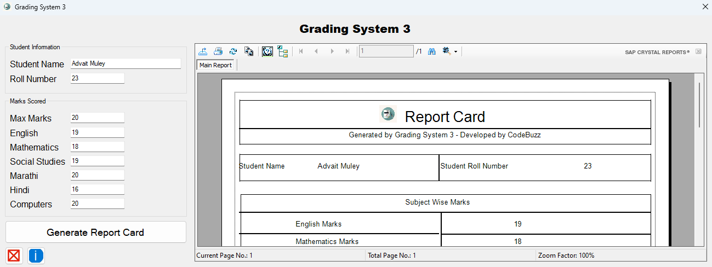

Project Details
Other Resources
Project Details
Other Resources
This Project is created for automating the process of report cards of a school. Even though, popular and rich schools have many such systems, small schools with a low fees lack such systems.
So, I have made this project in VB.NET, one of the common but old programming languages for making GUI Based Windows Applications.
As told earlier, I would not be giving away the code of this project but I would like to show it's features and capablities.
Also, for using this project, you need to install crystal reports redistributable library
As soon as you open your application, you will have to login with your credentials as shown below.
After you enter the credentials, you will see a simple dashboard with some fields.
You are then supposed to populate the fields according to their names
At last, you clik on the generate report card button. It will then show you a report card preview besides and will also give you options to print, save, export the report card etc.
